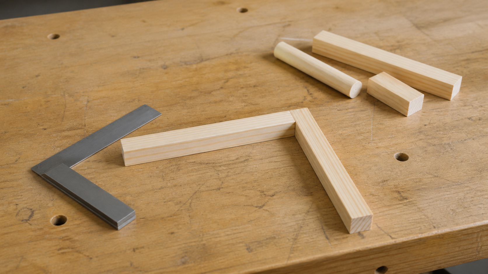
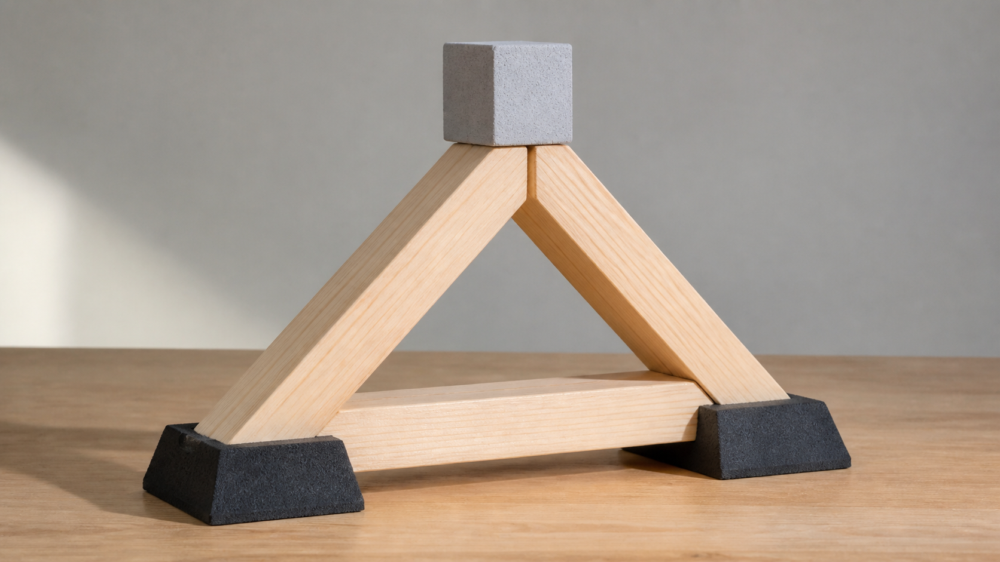
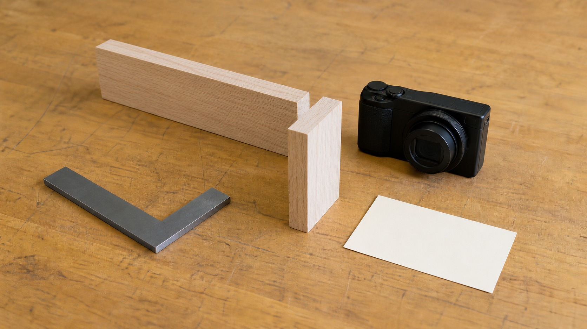

Adding more material always makes a frame stronger.
A useful change must suit the load path, joints and material; extra material can add waste without fixing the cause.
Module 6 of 10
Production turns design information into a physical system. A sensible sequence respects dependencies, pauses at useful checkpoints and records decisions. For a catapult, the base and frame matter because they support other components and provide pathways for forces. This module explains what to notice, while every practical procedure remains teacher directed.
Use this page to learn and prepare. Follow your teacher's demonstration, approved tools, local safety controls and testing instructions for every practical action.

Theory 1 of 3
A production sequence is an ordered plan for turning materials into a solution. Some tasks depend on earlier information or checks. A component cannot be confirmed as fitting the whole system if the related drawing is unclear, and later assembly can become difficult if an earlier stage has not been checked. Engineers map these dependencies so that mistakes are found while they are still easy to discuss and correct.
A checkpoint is a planned pause to compare the work with the approved design information. It might focus on size, alignment, material condition, stability or whether the next process is ready to begin. Checkpoints are not signs that production has failed; they are part of controlled production. The exact sequence, tools and approval points for this project come from your teacher, because they depend on the design and local workshop conditions.

Multiple-choice knowledge check
Choose an answer, check the feedback and try again if needed. Your checked progress is saved on this device.
0 of 4 questions checkedSaved on this device
Longer response
A later component depends on the base and frame being aligned, but a planned teacher-approved checkpoint reveals a mismatch. Explain why the sequence should pause and justify what evidence and decision are needed before the dependent task begins.
Use the scaffold to explain and justify your thinking. No drawing is required. Your writing autosaves in this browser.
Formative learning evidence — not proof of submission.
Theory 2 of 3
A load path is the route a force follows through a structure towards its supports. Along that path, parts may experience compression, which squeezes; tension, which pulls; shear, which encourages nearby layers or sections to slide; torsion, which twists; or bending, which combines effects across a member. A frame can therefore look still while forces are travelling through several connected components.
Shape and connection influence how a structure carries those forces. Triangular arrangements can resist a change of shape because the angles of a triangle cannot change without a side changing length. That does not mean every triangle automatically makes every design strong. Bracing must relate to the actual load path, joints and material. Engineers trace where movement begins and where forces travel before recommending a structural change.

Multiple-choice knowledge check
Choose an answer, check the feedback and try again if needed. Your checked progress is saved on this device.
0 of 4 questions checkedSaved on this device
Longer response
During a teacher-approved check, a frame looks neat but shifts sideways. Explain how a load path, at least two possible force effects, alignment and joint relationships could contribute. Then justify the evidence needed before one structural change is recommended.
Use the scaffold to explain and justify your thinking. No drawing is required. Your writing autosaves in this browser.
Formative learning evidence — not proof of submission.
Theory 3 of 3
Useful production checks may consider squareness, symmetry, joint quality, stability and efficient material use. These ideas are connected. A frame can contain accurate individual parts but still be out of alignment as a system. Likewise, a neat surface does not compensate for a component that moves when it should remain steady. Quality grows from repeated attention to the relationships between parts.
Photographs and production notes can capture what changed, what was checked and why a decision was made. A useful photograph has a clear subject and a caption that explains its evidence value. It is not decoration, and it does not prove teacher-observed competence or safe tool use by itself. Honest records include problems and adjustments as well as successful stages, because those records reveal the thinking behind the finished result.

Multiple-choice knowledge check
Choose an answer, check the feedback and try again if needed. Your checked progress is saved on this device.
0 of 4 questions checkedSaved on this device
Longer response
Choose a real or teacher-provided production checkpoint. Explain what was observed, how it relates to system quality, what decision followed and what changed. Include a caption for one useful photograph or, if no image is available, describe the exact evidence a photograph would need to show.
Use the scaffold to explain and justify your thinking. No drawing is required. Your writing autosaves in this browser.
Formative learning evidence — not proof of submission.
Worked example
Vocabulary
Common traps
A useful change must suit the load path, joints and material; extra material can add waste without fixing the cause.
A photo records visible evidence, while safe competence is confirmed through teacher observation and local requirements.
Video learning · 1:23
HGTV
Watch for: Why does a V mark plus a square communicate a location more accurately than a single pencil dash, and why label the offcut?
Source boundary: Marking communication only; actual tool selection and operation remain teacher controlled.

Use the marking-communication diagram, then apply a dimension-verification checklist to the authorised drawing.
The privacy-enhanced player loads only when you choose it.
Applied Learning Activity
Practise tracing forces and placing quality checkpoints in a production sequence.
Evidence to save: Ordered sequence, load-path explanation and one quality-evidence caption, saved as formative practice.
Type the response, reasoning or record requested above. It autosaves in this browser.
Use: ‘The force enters at ___, travels through ___ and reaches ___. I would check ___ before ___ because ___.’
Explain how one alignment problem could affect a later component interaction elsewhere in the system.
Higher-order evidence
A frame has reached a teacher-approved checkpoint before a dependent component is added. Explain how to inspect, record and respond to the evidence without inventing a construction step.
Type your response. No drawing is required. It autosaves in this browser.